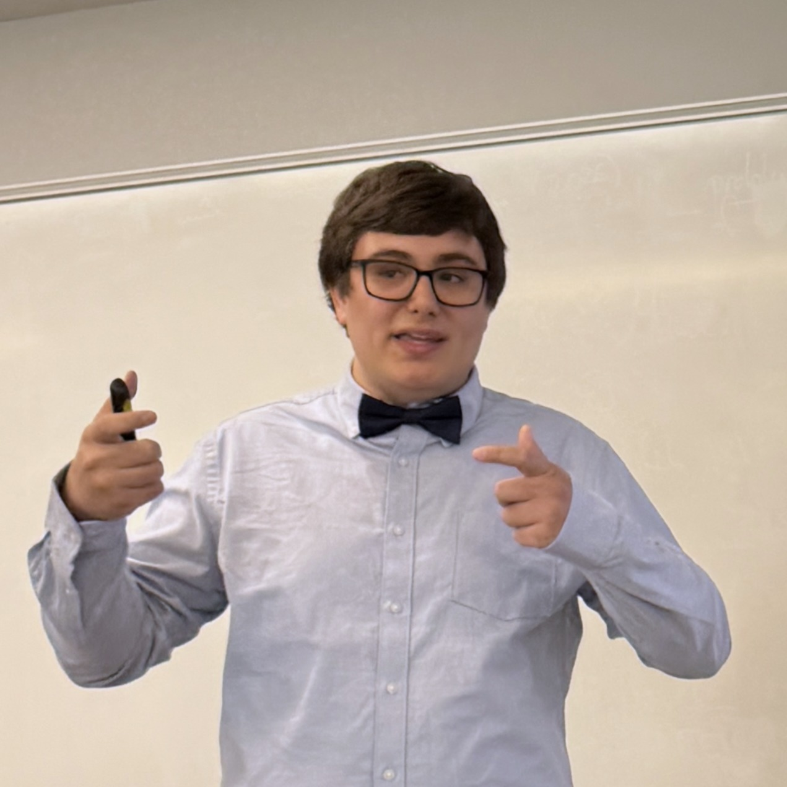

I graduated with my PhD in Mathematics from the University of Connecticut in May 2026.
My current research is in computability theory, reverse mathematics, and effective topology. I have also studied algorithmic randomness. My PhD advisors at UConn were Professors Damir Dzhafarov and Reed Solomon. My dissertation is titled "Computability Theory and Countable Second-Countable Spaces."
At UConn, I organized the math department's SIGMA Seminar, which features talks at the first- and second-year graduate student level. I also served as President of UConn's American Mathematical Society Graduate Student Chapter.
I gained significant teaching experience at UConn and served as instructor of record for Business Calculus, Multivariable Calculus, and Precalculus. From Fall 2024 to Spring 2025, I was a Math Innovation Teaching Fellow and taught my own small section of Multivariable Calculus each semester. From Fall 2025 to Spring 2026, I was an EMITT (Equity-Minded Inquiry and Transformative Teaching) Scholar and implemented equity-minded pedagogy in sections of Precalculus.
As of Fall 2026, I am a Preceptor in Mathematics at Harvard University.